SONATINA No 2
Here is one of my original compositions for solo piano. My pieces are written in the style of classical music, particularly the Romantic period. In this piece, I used sonata form to compose a sonatina.
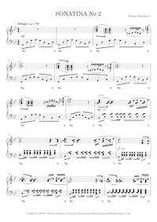
SONATINA No 2
Here is one of my original compositions for solo piano. My pieces are written in the style of classical music, particularly the Romantic period. In this piece, I used sonata form to compose a sonatina.
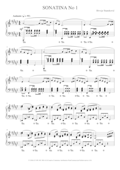
SONATINA No 1
Here is one of my original compositions for solo piano. My pieces are written in the style of classical music, particularly the Romantic period. Most of my works are small-scale, typically lasting a few minutes. In this piece, I used sonata form for the first time and composed a simple sonatina with a predominantly lyrical character.
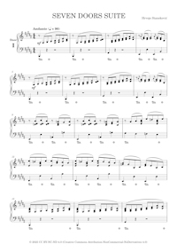
SEVEN DOORS SUITE
Here is one of my original compositions for solo piano. I have chosen to call it Seven Doors Suite. In classical music, a suite is an instrumental composition consisting of several short movements that are related in some way and usually contrast in character. The movements are performed together as a single work. In this suite, I am using a more modern style than usual, and I hope it will appeal to a wider audience. The suite consists of seven movements, each like a door leading into a different musical world. Seven doors, each opens onto an unknown world. Open carefully, and step through… if you dare to discover what lies beyond.
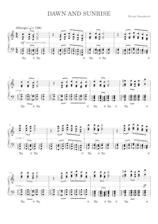
DAWN AND SUNRISE
This is one of my original compositions for solo piano, titled Dawn and Sunrise. I imagine the first part, written in C major, as dawn, the moment when the first sunrays dance and break through the darkness. The second part, in A major, portrays the rising sun as it gradually warms and awakens the earth. Yet this is not a gentle piece, the piano becomes a canvas for light itself, showing the power of light.
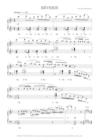
RÊVERIE
This is one of my original solo piano compositions, a Rêverie written in the style of classical music from the Romantic period. A Rêverie (meaning “daydream”) is a lyrical piece that evokes a dreamy, reflective mood. However, this composition also features a contrasting middle section, adding dynamic variety and emotional depth.
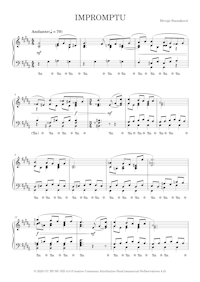
IMPROMPTU
Here is one of my original compositions for piano solo. I chose to call it Impromptu (from the Latin "in promptu", meaning within reach of the hand). In classical music, this title is often used for a short, lyrical instrumental composition—typically for solo piano—that gives the impression of spontaneous creation. An impromptu conveys a sense of music unfolding in real time, as if being composed and felt simultaneously, capturing the composer's emotional state or inner reflection in the given moment. Though often free in form, it may contain contrasting sections and expressive shifts, allowing for both introspection and passion within a fluid, unstructured framework.
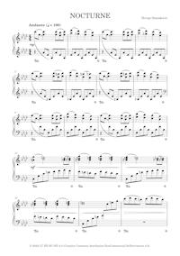
NOCTURNE
Here is one of my original compositions for piano solo. It's a nocturne, written in the style of classical music, romantic period. It was inspired by the short poem Notturno written by Antun Gustav Matoš. Antun Gustav Matoš (1873–1914) is a Croatian poet, short story writer, journalist, essayist and travelogue writer. Notturno is his last poem and is one of my favorite poems. It describes a warm and peaceful night in a village. It's very atmospheric, containing many sensory experiences (image, sound or smell), some contrasts and has a lovely rhythmic structure of verses.
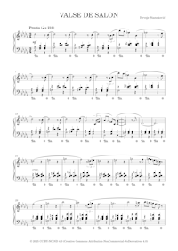
VALSE DE SALON
Here is one of my original compositions for piano solo. It's a waltz, written in the style of classical music, romantic period. The music evokes the elegant, swirling motions of ballroom dancing.
RHAPSODY
Here is one of my original compositions for piano solo. As usual, it was written in the style of classical music, romantic period. I decided to call it Rhapsody. A rhapsody is a longer composition having a free-form, that contains episodes of different moods, colors, and tonalities.
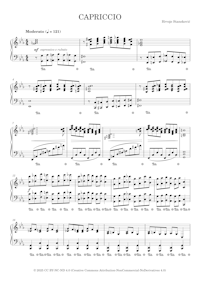
CAPRICCIO
Here is one of my original compositions for piano solo. I chose to call it Capriccio (from Italian capricci = whims). In classical music, this name is often used for whimsical, intense and lively compositions. The composition is written in the style of classical music, romantic period.
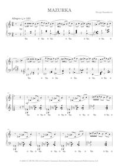
MAZURKA
Here is one of my original compositions for piano solo, as always written in the classical music style from the Romantic period. It is a Mazurka, a Polish dance traditionally characterized by its lively triple meter and distinctive rhythmic accents, which blends the spirit of folk dance with expressive melodic lines.
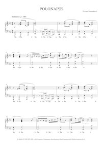
POLONAISE
Here is one of my original compositions for piano solo. It's a polonaise written in the style of classical music from the Romantic period. The polonaise is a dance originating in Poland. Probably not all of the rhythms used are strictly characteristic of polonaises but, as it should be, the meter is triple and the emotion is predominantly proud (even in the less happy parts).
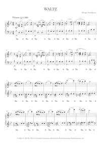
WALTZ
Here is one of my original compositions for piano solo. It's a waltz, written in the style of classical music, romantic period. It has a ternary form (ABA') where the repetition of A (that is A') is greatly altered and shortened to function as a coda.
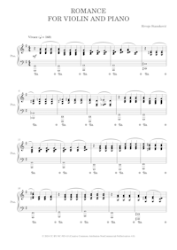
ROMANCE FOR VIOLIN AND PIANO
This is my first composition that is not for a piano solo. It is a simple composition for violin and piano. It begins with an introduction played by a piano solo. In the first section, the violin plays the melody while the piano provides the accompaniment. In the second section, the leading role alternates between piano and violin. Then follows the repetition from the beginning to the end of the first section (da capo al fine). Phrases are regular and have 4 measures. The choice of bowing is left to the performer.
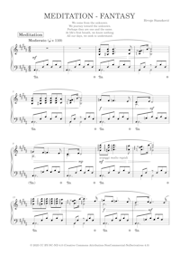
MEDITATION - FANTASY
This is one of my original compositions for solo piano, written in the classical style of the Romantic period. It expresses a timeless reflection on human existence. Did we exist before birth? Will we exist after death? What is the purpose of life? The first part (Meditation) represents the entry into life from a source. The second part (Fantasy) represents the experience of life and the search for meaning. Later in the piece, a figure appears, first without, and then with accompaniment. This is a kind of “call” representing the arrival of death. After this, the intensity increases, suggesting a struggle or resistance against the inevitable, followed by a final release. The piece concludes with a return to the exact musical material from the beginning, implying a full circle. Thus, the end mirrors the beginning, suggesting they are one and the same.
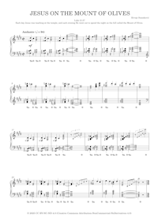
JESUS ON THE MOUNT OF OLIVES
Luke 21:37
Each day Jesus was teaching at the temple, and each evening He went out to spend the
night on the hill called the Mount of Olives.
Explanation:
By day, Jesus taught crowds in the Temple, sharing wisdom, healing, and engaging with people.
By night, He withdrew to the Mount of Olives, likely to pray, rest, and spend time with His
disciples.
The Mount of Olives was a quiet, beautiful place overlooking Jerusalem, filled with ancient
olive trees.
Jesus seems to have chosen this spot intentionally as a place of retreat and communion with God.
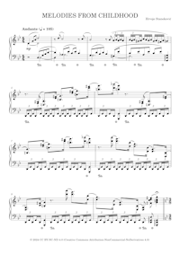
MELODIES FROM CHILDHOOD
Here is one of my original compositions for piano solo. In this one, I used the themes that I composed a long time ago, back in childhood. Hence the name of the composition. The composition consists of an introduction that is also used as a coda and two sections. The first section was not easy to write down because of its improvisatory character and because it should be played with a lot of rubato.
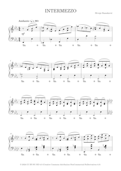
INTERMEZZO
Here is one of my original compositions for piano solo. It is a simple, short composition that I decided to call an intermezzo.
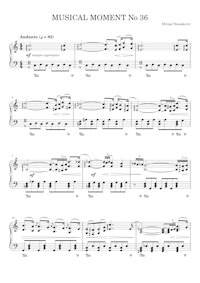
MUSICAL MOMENT No 36
Here is one of my original compositions for solo piano. I chose to call them Musical Moments, a suitable name for smaller-scale works. They are written in the style of classical music from the Romantic period. However, this piece is slightly different, as it steps outside the strict classical idiom. The opening theme was composed a few months ago and was published as part of a wedding anniversary video. Since then, I decided to develop it into a complete composition.
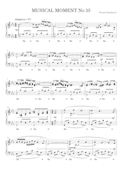
MUSICAL MOMENT No 35
Here is one of my original compositions for piano solo. I chose to call them musical moments, a suitable name for smaller compositions. They are written in the style of classical music, romantic period.
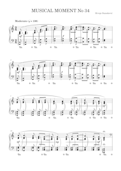
MUSICAL MOMENT No 34
Here is one of my original compositions for piano solo. I chose to call them musical moments, a suitable name for smaller compositions. They are written in the style of classical music, romantic period.
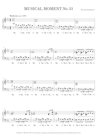
MUSICAL MOMENT No 33
Here is one of my original compositions for piano solo. I chose to call them musical moments, a suitable name for smaller compositions. They are written in the style of classical music, romantic period.
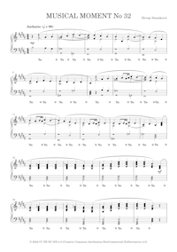
MUSICAL MOMENT No 32
Here is one of my original compositions for piano solo. I chose to call them musical moments, a suitable name for smaller compositions. They are written in the style of classical music, romantic period.
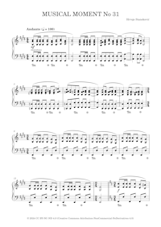
MUSICAL MOMENT No 31
Here is one of my original compositions for piano solo. I chose to call them musical moments, a suitable name for smaller compositions. They are written in the style of classical music, romantic period. This one is a complete rework of one of my early compositions. The composition has a rondo form (ABACADA). The principal (A) is shorter while the episodes (B, C and D) are longer.
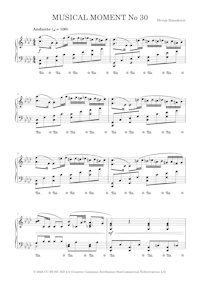
MUSICAL MOMENT No 30
Here is one of my original compositions for piano solo. I chose to call them musical moments, a suitable name for smaller compositions. They are written in the style of classical music, romantic period. This one consists of two relatively independent parts and the second part is more passionate.
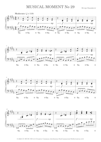
MUSICAL MOMENT No 29
Here is one of my original compositions for piano solo. I chose to call them musical moments, a suitable name for smaller compositions. They are written in the style of classical music, romantic period.
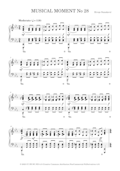
MUSICAL MOMENT No 28
Here is one of my original compositions for piano solo. I chose to call them musical moments, a suitable name for smaller compositions. They are written in the style of classical music from the Romantic period. This composition is a short one, written in a ternary form. I like it a lot. It has a certain emotion, not particularly happy though.
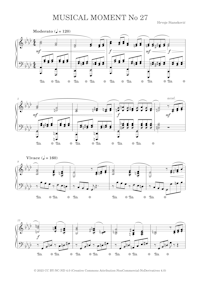
MUSICAL MOMENT No 27
Here is one of my original compositions for a piano solo. I chose to call them musical moments, a suitable name for smaller compositions. They are written in the style of classical music from the Romantic period. This one is a complete rework of one of my early compositions. The form of this composition is: Introduction A B A C B A. The introduction and part C appear only once. Part B appears two times without any modifications. Part A appears three times and each time it appears, it is modified. The composition is in a happy and dancing mood except for part C. Part C sounds like a worry that you briefly remembered and then choose not to further think about it.
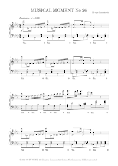
MUSICAL MOMENT No 26
Here is one of my original compositions for piano solo. I chose to call them musical moments, a suitable name for smaller compositions. They are written in the style of classical music, romantic period.
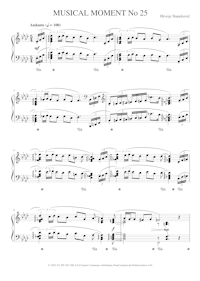
MUSICAL MOMENT No 25
Here is one of my original compositions for piano solo. I chose to call them musical moments, a suitable name for smaller compositions. They are written in the style of classical music, romantic period.
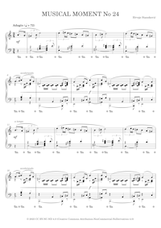
MUSICAL MOMENT No 24
Here is one of my original compositions for piano solo. I chose to call them musical moments, a suitable name for smaller compositions. They are written in the style of classical music, romantic period.
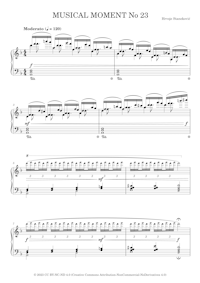
MUSICAL MOMENT No 23
Here is one of my original compositions for piano solo. I chose to call them musical moments, a suitable name for smaller compositions. They are written in the style of classical music, romantic period.
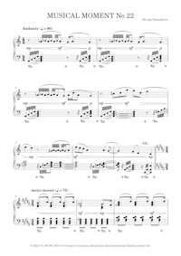
MUSICAL MOMENT No 22
Here is one of my original compositions for piano solo. I chose to call them musical moments, a suitable name for smaller compositions. They are written in the style of classical music, romantic period.
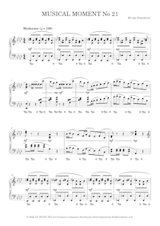
MUSICAL MOMENT No 21
Here is one of my original compositions for piano solo. I chose to call them musical moments, a suitable name for smaller compositions. They are written in the style of classical music, romantic period. This composition starts with an introduction and then becomes passionate.
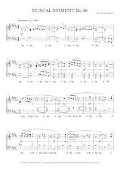
MUSICAL MOMENT No 20
Here is one of my original compositions for piano solo. I chose to call them musical moments, a suitable name for smaller compositions. They are written in the style of classical music, romantic period. This composition starts in a rather calm and meditative atmosphere. Then after a short lament, it finishes lively.
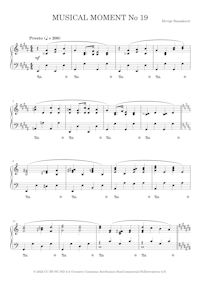
MUSICAL MOMENT No 19
Here is one of my original compositions for piano solo. I chose to call them musical moments, a suitable name for smaller compositions. They are written in the style of classical music, romantic period.
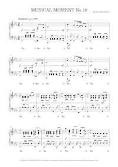
MUSICAL MOMENT No 18
Here is one of my original compositions for piano solo. I chose to call them musical moments, a suitable name for smaller compositions. They are written in the style of classical music, romantic period.
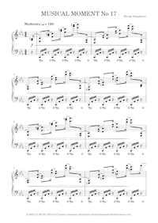
MUSICAL MOMENT No 17
Here is one of my original compositions for piano solo. I chose to call them musical moments, a suitable name for smaller compositions. They are written in the style of classical music, romantic period. This composition starts with a short, dramatic introduction and then it continues peacefully.
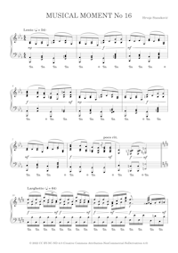
MUSICAL MOMENT No 16
Here is one of my original compositions for piano solo. I chose to call them musical moments, a suitable name for smaller compositions. They are written in the style of classical music, romantic period.
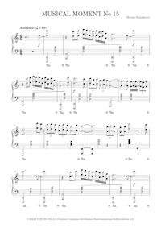
MUSICAL MOMENT No 15
Here is one of my original compositions for piano solo. I chose to call them musical moments, a suitable name for smaller compositions. They are written in the style of classical music, romantic period.
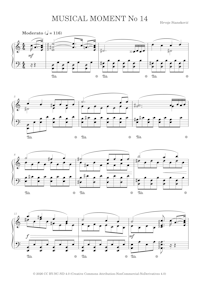
MUSICAL MOMENT No 14
Here is one of my original compositions for piano solo. I chose to call them musical moments, a suitable name for smaller compositions. They are written in the style of classical music, romantic period.
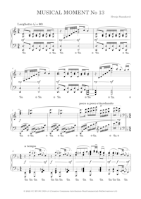
MUSICAL MOMENT No 13
Here is one of my original compositions for piano solo. I chose to call them musical moments, a suitable name for smaller compositions. They are written in the style of classical music, romantic period.
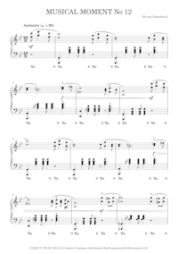
MUSICAL MOMENT No 12
Here is one of my original compositions for piano solo. I chose to call them musical moments, a suitable name for smaller compositions. They are written in the style of classical music, romantic period. This composition was inspired by Brahms's Hungarian Dances
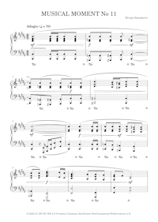
MUSICAL MOMENT No 11
Here is one of my original compositions for piano solo. I chose to call them musical moments, a suitable name for smaller compositions. They are written in the style of classical music, romantic period. This composition consists of two parts and includes a passage that is used both as an introduction and coda.
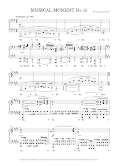
MUSICAL MOMENT No 10
Here is one of my original compositions for piano solo. I chose to call them musical moments, a suitable name for smaller compositions. They are written in the style of classical music, romantic period.
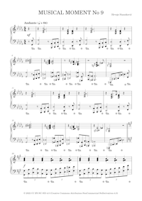
MUSICAL MOMENT No 9
Here is one of my original compositions for piano solo. I chose to call them musical moments, a suitable name for smaller compositions. They are written in the style of classical music, romantic period. This composition is based on two contrasting parts which are then repeated with some variation.
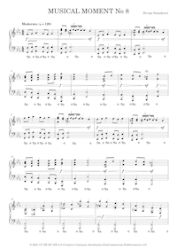
MUSICAL MOMENT No 8
Here is one of my original compositions for piano solo. I chose to call them musical moments, a suitable name for smaller compositions. They are written in the style of classical music, romantic period. This composition has two parts ending with a coda.
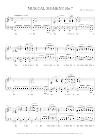
MUSICAL MOMENT No 7
Here is one of my original compositions for piano solo. I chose to call them musical moments, a suitable name for smaller compositions. They are written in the style of classical music, romantic period. Basically, this musical composition is a lament.
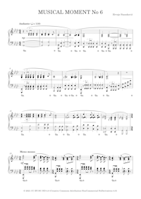
MUSICAL MOMENT No 6
Here is one of my original compositions for piano solo. I chose to call them musical moments, a suitable name for smaller compositions. They are written in the style of classical music, romantic period.
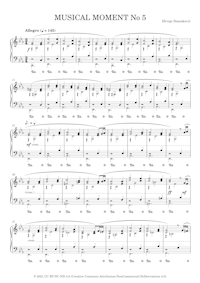
MUSICAL MOMENT No 5
Here is one of my original compositions for piano solo. I chose to call them musical moments, a suitable name for smaller compositions. They are written in the style of classical music, romantic period. This musical moment starts with a simple static theme. Then some life is given to it until the end of the first part. The second part contains one short and loud theme that is made of chords and one soft and lyrical theme. They are repeated with some minor variations.
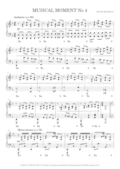
MUSICAL MOMENT No 4
Here is one of my original compositions for piano solo. I chose to call them musical moments, a suitable name for smaller compositions. They are written in the style of classical music, romantic period. This musical moment starts with an introduction and has two parts.
MUSICAL MOMENT No 3
Here is one of my original compositions for piano solo. I chose to call them musical moments, a suitable name for smaller compositions. They are written in the style of classical music, romantic period. This musical moment has a ternary form (ABA). Section A has also a ternary form. Section B has a binary form. The recapitulation of section A is shortened.
MUSICAL MOMENT No 2
Here is one of my original compositions for piano solo. I chose to call them musical moments, a suitable name for smaller compositions. They are written in the style of classical music, romantic period. This musical moment starts simple and then gradually becomes more intense.
MUSICAL MOMENT No 1
Here is one of my original compositions for piano solo. I chose to call them musical moments, a suitable name for smaller compositions. They are written in the style of classical music, romantic period.